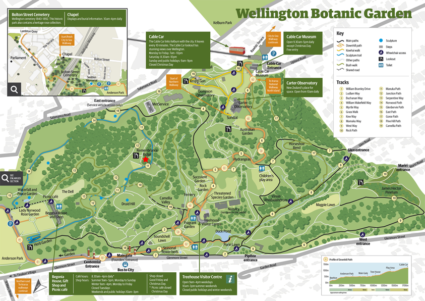

Please respond by October 1st
Saturday, November 11 2017 | Remembrance Ridge - Wellington Botanic Gardens | The Pier
We're incredibly excited to be inviting you to share our special day with us. It's a rare opportunity to bring together our loved ones and spend some quality time with you all.
The ceremony will be outdoors if the weather permits. If the weather isn't nice enough we will have the ceremony at The Pier in Evans Bay.
We will contact guests on the day if we'll be having the wedding indoors.
Our outdoor ceremony will take place at Remembrance Ridge at the Botanical Gardens (red star on above map).
After our ceremony, guests are invited to make their way to The Pier where our caterers will be waiting with bubbles, beer and juice. The Pier does not have guest parking available, but there is plenty of on street parking around the bays.
The Pier is at 329 Evans Bay Parade, Hataitai, Wellington 6021 or here's a google maps link
3:30pm - Guests arrive at the Botanical Gardens
4pm - Ceremony starts
4:30pm - Ceremony finishes. Guests are welcome to mingle about and have photos before making their way to The Pier. The Bride and Groom and families will stay a bit longer for more photos etc
5 - 5:30ish - Guests have started arriving at The Pier and are making themselves at home. Food, drinks, speeches and music will reign supreme.
12am - Hometime
We are planning to pack up and travel in the near future, so please just bring yourselves on the day.
If you would like to contribute to our travel fund, you can do so at:
Katie M Wright
38-9018-0318114-01.